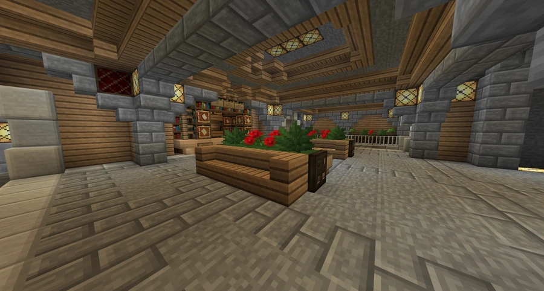
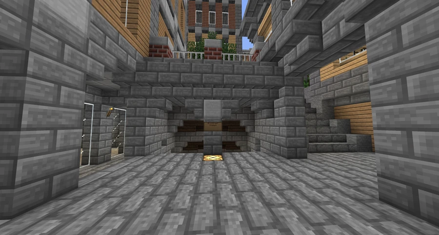

BroStreet Station
A subway station in Downtown on Bro Street, beside the Bro Street Diner and the BroCORP Tower. It was one of the first stations in v11.
Location and surrounding growth
The station takes its name from Bro Street. It occupies a small setback from the street beside the Bro Street Diner and near the BroCORP Tower. During the initial excavation, witnesses described it as being in the middle of nowhere, although new construction was already appearing nearby. Urban expansion placed it in the heart of Downtown.



Construction and design changes
Construction began in early 2012 under MolybDenim, assisted by DarkFox118. After completion, a remodel made the station considerably smaller. The change prompted debate among the engineers because its location beside BroCorp was expected to generate heavy daily traffic.
After the discussion, that configuration was retained pending further analysis by the Broville Department of Transportation. Despite the small space relative to demand, its simple circulation allowed many passengers to enter and leave. The account of its public opening in spring 2012 reports only one light being out and no other problems since inauguration.



See also
Sources and references
- v11.4.4 maps, signs, books and items World records
- BroStreet Station · Broville Wiki Community archive
Text adapted and expanded from BroStreet Station (contributors and history, revision 5080). Adapted text is available under CC BY-SA 3.0.